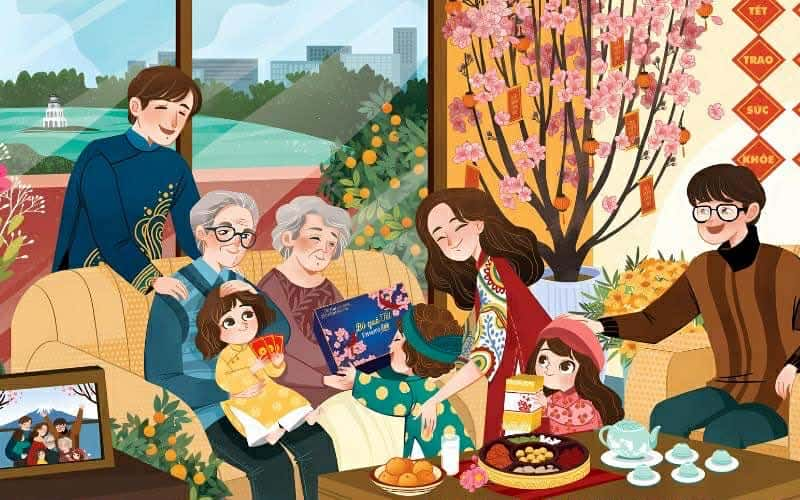

1. Giới thiệu chung về Tết Nguyên Đán
_______________________________________________
Tết (Tết Nguyên Đán) là lễ hội truyền thống quan trọng nhất của người Việt, đánh dấu thời điểm bắt đầu năm mới theo âm lịch.
Tết là dịp để:
- Gia đình sum họp
- Tưởng nhớ tổ tiên
- Chúc nhau may mắn, sức khỏe và hạnh phúc
- Kết thúc năm cũ, đón khởi đầu mới
Tết thường diễn ra vào cuối tháng 1 đến đầu tháng 2 dương lịch và gắn liền với nhiều phong tục như dọn dẹp nhà cửa, cúng giao thừa, lì xì, chúc Tết.

Những ngày giáp Tết, không khí trở nên rộn ràng và ấm áp hơn bao giờ hết. Mọi nhà đều dọn dẹp, trang trí nhà cửa, chuẩn bị mâm cỗ cúng tổ tiên với lòng thành kính. Hình ảnh bánh chưng xanh, cành mai vàng, cành đào hồng đã trở thành biểu tượng quen thuộc của ngày Tết Việt.